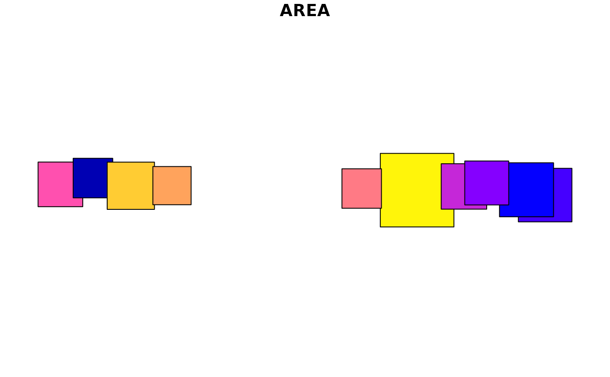

Create a square within or around a simple feature object or collection
Source:R/st_square.R
st_square.RdGet a circumscribed square or approximate inscribed square in a sf object.
If inscribed is TRUE, the square geometry returned may not be contained
wholly within the original geometry. The inscribed square is created from the
bounding box of an inscribed circle rotated 45 degrees.
Usage
st_square(
x,
scale = 1,
rotate = 0,
inscribed = FALSE,
by_feature = FALSE,
call = caller_env()
)
# Default S3 method
st_square(x, ...)
# S3 method for class 'sfc'
st_square(
x,
scale = 1,
rotate = 0,
inscribed = FALSE,
by_feature = FALSE,
call = caller_env()
)
# S3 method for class 'sf'
st_square(x, ..., by_feature = FALSE)
# S3 method for class 'bbox'
st_square(x, ...)
st_inscribed_square(x, scale = 1, rotate = 0, by_feature = FALSE)Arguments
- x
A
sf,sfc, orbboxobject or another object coercible to a simple feature collection withas_sfc().- scale
numeric; scale factor, Default: 1
- rotate
numeric; degrees to rotate (-360 to 360), Default: 0
- inscribed
If
TRUE, the returned geometry is inscribed within x, ifFALSE(default), the geometry is circumscribed.- by_feature
If
TRUE, create new geometry for each feature. IfFALSE, create new geometry for all features combine withst_union_ext().- call
The execution environment of a currently running function, e.g.
caller_env(). The function will be mentioned in error messages as the source of the error. See thecallargument ofabort()for more information.- ...
Additional parameters passed to
st_square()sfcmethod if x is asforbboxobject.
Examples
nc <- sf::read_sf(system.file("shape/nc.shp", package = "sf"))
nc <- sf::st_transform(nc, crs = 3857)
plot(st_square(nc), max.plot = 1)
plot(st_square(nc[1:10, ], by_feature = TRUE), max.plot = 1)
